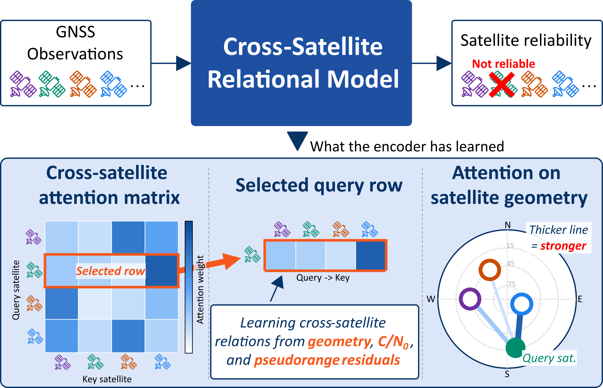
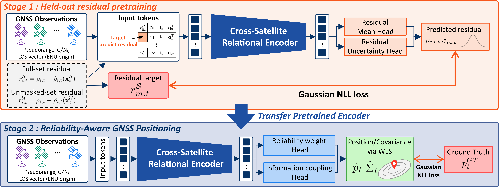
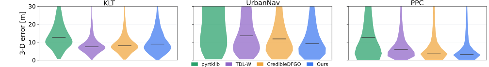
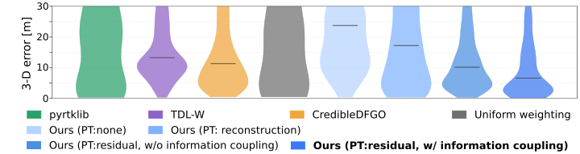
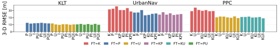

01 / PRETRAIN
Learn without labels
Predict the masked pseudorange residual of one satellite from the remaining observations.
Anonymous research project · 2027
A masked-residual pretraining task teaches a Transformer to reason across simultaneously observed satellites, then transfers those representations to reliability-aware GNSS positioning.
A visual overview of the proposed cross-satellite relational learning framework and its results.
Urban GNSS positioning is degraded by multipath and non-line-of-sight signals. We introduce a self-supervised held-out residual prediction task that learns relationships among all satellites observed at the same epoch without external labels. The pretrained Cross-Satellite GNSS Encoder is then fine-tuned for reliability-aware positioning through differentiable weighted least squares. Across geographic regions unseen during training, the method remains competitive with existing learning-based weighting methods. Attention analysis further shows structured behavior tied to satellite quality and relative geometry.

01 / PRETRAIN
Predict the masked pseudorange residual of one satellite from the remaining observations.
02 / TRANSFER
Transfer relational features to satellite reliability and correlation-aware weighted positioning.
03 / INTERPRET
Use attention and geometry perturbations to reveal how satellites provide context to one another.
One encoder, two stages
Each satellite token contains a pseudorange residual, C/N0, an ENU line-of-sight vector, and a token state. Self-attention lets every satellite representation use the context of the full observation set.

The target satellite keeps its signal quality and geometry, but its residual is masked. SPP is recomputed without that satellite to prevent target leakage. A Gaussian head predicts both residual mean and uncertainty.
Fine-tuning estimates satellite-wise reliability and off-diagonal information coupling. A differentiable WLS layer then optimizes position and covariance end to end.
Models evaluated in Hong Kong are trained only on Tokyo and Nagoya data; models evaluated in Tokyo and Nagoya are trained only on Hong Kong data. This makes every reported test region geographically unseen during training.
Achieves the best median error among the evaluated methods.
Achieves the best median error in the cross-region comparison.
Residual pretraining and information coupling improve median positioning accuracy.



Attention is not uniform: the encoder forms shared references around informative satellites and responds to the geometry between each query–key pair. The analysis below uses PPC Nagoya run1, a region excluded from pretraining.
Satellite attention evolves over time on the skyplot, revealing how the encoder relates each query satellite to the surrounding constellation geometry.
ρ = 0.56
Layer 1 incoming attention correlates positively with elevation, and also with C/N0 (0.41) and estimated reliability (0.53).
ρ = −0.48
Layer 1 attention decreases with angular separation; Layer 3 shows the same tendency (−0.38).
L1 ≠ L2
Layer 1 is visibly geometry-sensitive, while Layer 2 retains attention to distinctive observations even after geometry is shuffled.
Takeaway
Predicting one satellite’s residual from the rest creates geometry-conditioned representations that transfer to unseen regions and remain interpretable through their attention structure.
Future work will extend these representations to satellite visibility, GNSS availability maps, and surrounding-environment recognition.